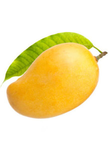
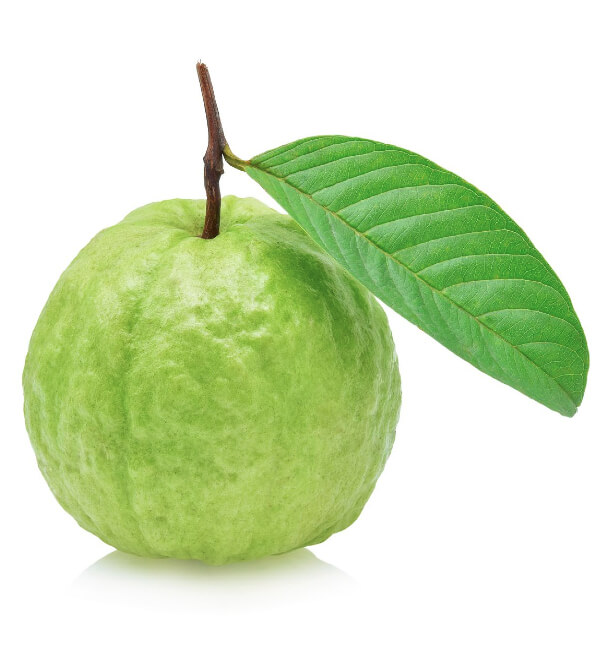
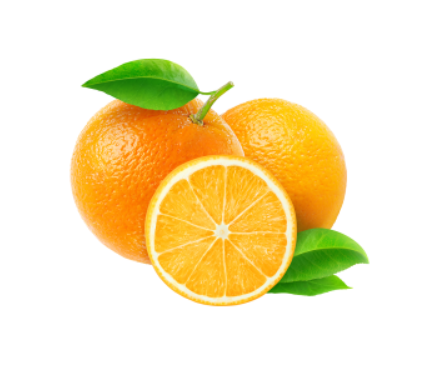
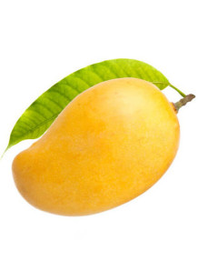
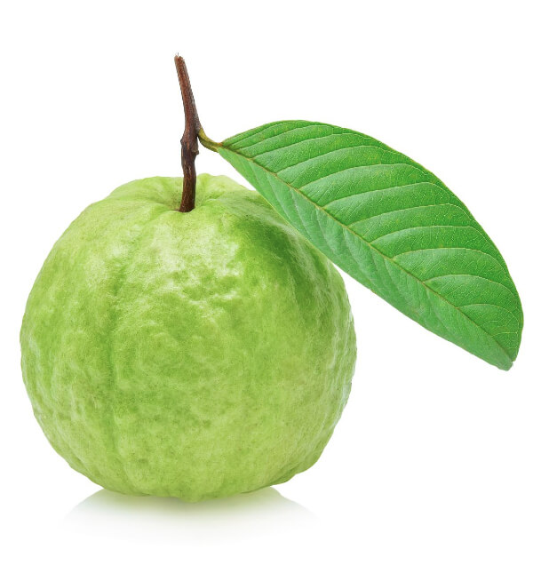
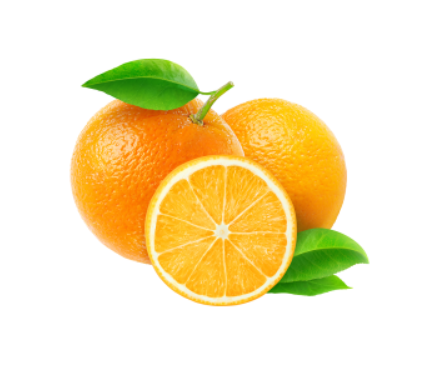
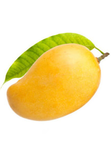
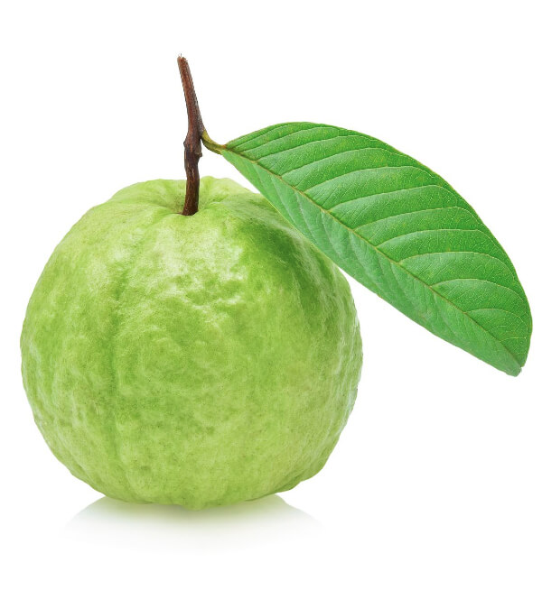
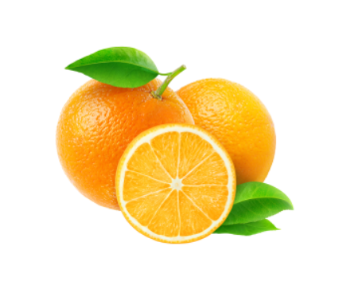
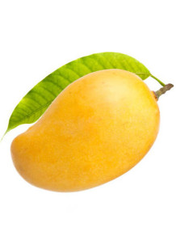
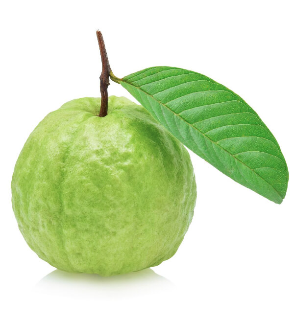
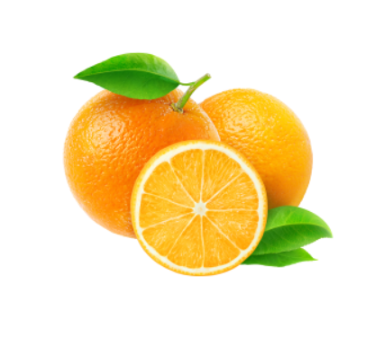
Fruits are nature's sweet treasures, packed with essential nutrients that contribute to overall health. Rich in vitamins, minerals, and antioxidants, fruits offer numerous benefits. Vitamin C, found in citrus fruits like oranges and strawberries, boosts the immune system and promotes skin health. Bananas, a potassium powerhouse, support heart function and regulate blood pressure. Berries, such as blueberries and raspberries, are loaded with antioxidants that combat oxidative stress and inflammation. Apples provide fiber for digestive health, while mangoes offer a dose of vitamin A, crucial for vision and immune support. Incorporating a variety of fruits into your diet ensures a colorful spectrum of nutrients, promoting a well-rounded and nourished body.